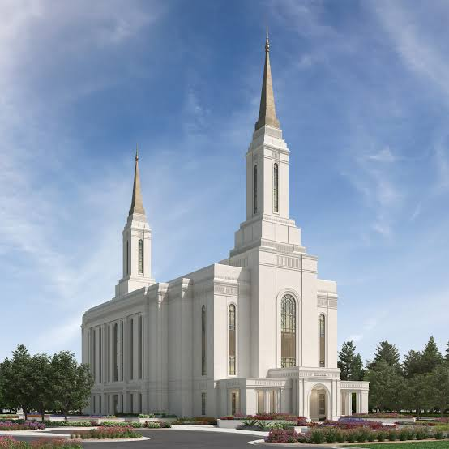
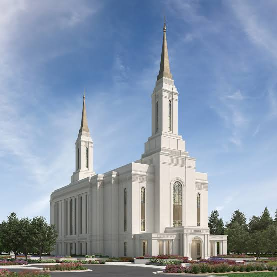
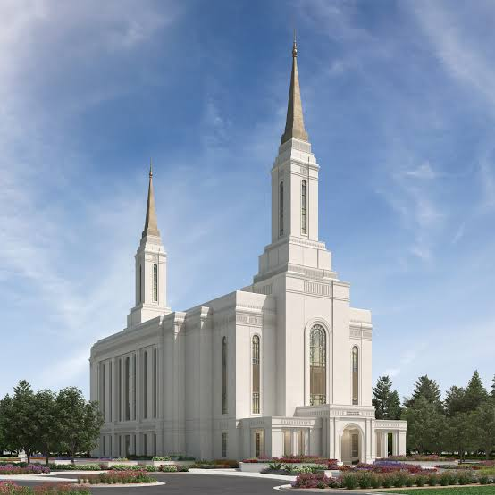

Temple Album

Accra Ghana Temple
Salt Lake Temple
Rome Italy Temple
Washington D.C. Temple

Johannesburg South Africa Temple

Paris France Temple
Provo City Center Temple
London England Temple
Abidjan Ivory Coast Temple